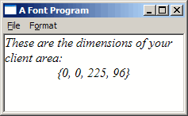

Example: font_one
CreateFont(), the primary
API when it comes to fonts, has 14 parameters for specifying height, style, weight, family,
and various other attributes.
Fortunately, it's not really has hard as it might appear, and a large portion of the work
involved is taken care of my sensible default values. All but 2 of the parameters to
CreateFont() can be set to 0 or NULL, and the system
will simply use a default value giving you a plain ordinary font.
CreateFont() creates an HFONT, a handle to a Logical Font in memory. The data held by this
handle can be retreived into a LOGFONT structure using GetObject() just
as a BITMAP struct can be filled from an HBITMAP.
The members of the LOGFONT are identical to the parameters to CreateFont() and
for convenience you can create a font directly from an existing LOGFONT structure
using CreateFontIndirect().
This is very handy, since it makes it simple to create a new font from an existing font handle
when you only want to alter certain aspects of it. Use GetObject() to fill a LOGFONT,
alter the members that you wish, and create a new font with CreateFontIndirect().
HFONT hf;
HDC hdc;
long lfHeight;
hdc = GetDC(NULL);
lfHeight = -MulDiv(12, GetDeviceCaps(hdc, LOGPIXELSY), 72);
ReleaseDC(NULL, hdc);
hf = CreateFont(lfHeight, 0, 0, 0, 0, TRUE, 0, 0, 0, 0, 0, 0, 0, "Times New Roman");
if(hf)
{
DeleteObject(g_hfFont);
g_hfFont = hf;
}
else
{
MessageBox(hwnd, "Font creation failed!", "Error", MB_OK | MB_ICONEXCLAMATION);
}
This is the code used to create the font in the example image. This is Times New Roman at 12 Point with
the Italics style set. The italics flag is the 6th parameter to CreateFont() which you can
see we have set to TRUE. The name of the font we want to use is the last parameter.
The one bit of trickery in this code is the value used for the size of the font, the lfHeight parameter to
CreateFont(). Usually people are used to working with Point sizes, Size 10, Size 12, etc... when
dealing with fonts. CreateFont() however doesn't accept point sizes, it wants Logical Units
which are different on your screen than they are on your Printer, and even between Printers and screens.
The reason this situation exists is because the resolution of different devices is so vastly different... Printers can easily display 600 to 1200 pixels per inch, while a screen is lucky to get 200... if you used the same sized font on a printer as on a screen, you likely wouldn't even be able to see individual letters.
All we have to do is convert from the point size we want, into the appropriate logical size for the device. In this
case the device is the screen, so we get the HDC to the screen, and get the number of logical pixels per inch
using GetDeviceCaps() and slap this into the formula so generously provided in MSDN which uses
MulDiv() to convert from our pointsize of 12 to the correct logical size that CreateFont()
expects. We store this in lfHeight and pass it as the first parameter to CreateFont().
GetDC() to get the HDC to your window, the
default font that is selected into it is System, which to be honest isn't all that
attractive. The simplest way to get a reasonable looking font to work with (without going through the CreateFont()
hassle) is to call
GetStockObject() and ask for the DEFAULT_GUI_FONT.
This is
a system object and you can get it as many times as you want without leaking memory,
and you can call DeleteObject() on it which won't do anything, which is good
because now you don't need to keep track of whether your font is one from CreateFont() or
GetStockObject() before trying to free it.
Your basic options are TextOut() and DrawText(). TextOut() is simpler,
but has less options and doesn't do word wrapping or alignment for you.
char szSize[100];
char szTitle[] = "These are the dimensions of your client area:";
HFONT hfOld = SelectObject(hdc, hf);
SetBkColor(hdc, g_rgbBackground);
SetTextColor(hdc, g_rgbText);
if(g_bOpaque)
{
SetBkMode(hdc, OPAQUE);
}
else
{
SetBkMode(hdc, TRANSPARENT);
}
DrawText(hdc, szTitle, -1, prc, DT_WORDBREAK);
wsprintf(szSize, "{%d, %d, %d, %d}", prc->left, prc->top, prc->right, prc->bottom);
DrawText(hdc, szSize, -1, prc, DT_SINGLELINE | DT_CENTER | DT_VCENTER);
SelectObject(hdc, hfOld);
First thing we do is use SelectObject() to get the font we want to use into our HDC and
ready for drawing. All future text operations will use this font untill another one is selected in.
Next we set the Text and Background colours. Setting the background colour doesn't actually make the whole
background this colour, it only affects certain operations (text being one of them) that use the background colour to
draw with. This is also dependant on the current Background Mode. If it is set to OPAQUE (the default)
then any text drawn is filled in behing with the background colour. If it is set to TRANSPARENT then
text is drawn without a background and whatever is behind will show through and in this case the background colour
has no effect.
Now we actually draw the text using DrawText(), we pass in the HDC to use and the string
to draw. The 3rd parameter is the length of the string, but we've passed -1 because DrawText() is
smart enough that it will figure out how long the text is itself. In the 4th parameter we pass in prc,
the pointer to the client RECT. DrawText() will draw inside this rectangle based on
the other flags that you give it.
In the first call, we specify DT_WORDBREAK, which defaults to aligned to the top left, and will
wrap the text it draws automatically at the edge of the rectangle... very useful.
For the second call, we're only printing a single line without wrapping, and we want it to be centered horizontally as well
as vertically (which DrawText() will do only when drawing a single line).
WNDCLASS is registered I have set the
CS_VREDRAW and CS_HREDRAW class styles. This causes the entire client
area to be redrawn if the window is resized, whereas the default is to only redraw the parts that have
changed. That looks really bad since the centered text moves around when you resize and it doesn't update
like you'd expect.
Like the common dialogs for getting open and save file names, there is a common dialog for choosing a font.
This is, oddly enough, called ChooseFont() and it works with the CHOOSEFONT structure
for you to set the defaults it should start with as well as returning the final result of the users selection.
HFONT g_hfFont = GetStockObject(DEFAULT_GUI_FONT); COLORREF g_rgbText = RGB(0, 0, 0);
void DoSelectFont(HWND hwnd)
{
CHOOSEFONT cf = {sizeof(CHOOSEFONT)};
LOGFONT lf;
GetObject(g_hfFont, sizeof(LOGFONT), &lf);
cf.Flags = CF_EFFECTS | CF_INITTOLOGFONTSTRUCT | CF_SCREENFONTS;
cf.hwndOwner = hwnd;
cf.lpLogFont = &lf;
cf.rgbColors = g_rgbText;
if(ChooseFont(&cf))
{
HFONT hf = CreateFontIndirect(&lf);
if(hf)
{
g_hfFont = hf;
}
else
{
MessageBox(hwnd, "Font creation failed!", "Error", MB_OK | MB_ICONEXCLAMATION);
}
g_rgbText = cf.rgbColors;
}
}
The hwnd in this call is simply the window you want to use as the parent for the font dialog.
The easiest way to use this dialog is in conjunction with an existing LOGFONT structure, which
is most likely from whichever HFONT you are currently using. We set the lpLogFont
member of the structure to point to the LOGFONT that we just filled with our current information
and also added the CF_INITTOLOGFONTSTRUCT flag so that ChooseFont() knows to
use this member. The flag CF_EFFECTS tells ChooseFont() to allow the user
to select a colour, as well as Underline and Strikeout attributes.
Oddly enough, the Bold and Italics styles don't count as effects, they are considered part of the font itself
and in fact some fonts only come in Bold or Italics. If you want to check or prevent the user from selecting
a bold or italic font you can check the lfWeight and lfItalic members of the
LOGFONT respectively, after the user has made their selection. You can then prompt the user
to make another selection or something change the members before calling CreateFontIndirect().
The colour of a font is not associated with an HFONT, and therefor must be stored seperately,
the rgbColors member of the CHOOSEFONT struct is used both to pass in the initial
colour and retreive the new colour afterward.
CF_SCREENFONTS indicates that we want fonts designed to work on the screen, as opposed to fonts that
are designed for printers. Some support both, some only one or the other. Depending on what you're going
to be using the font for, this and many other flags can be found in MSDN to limit exactly which fonts you
want the user to be able to select.
ChooseColor() common dialog. This is the code
used to allow the user to select the background colour in the example program.
COLORREF g_rgbBackground = RGB(255, 255, 255);
COLORREF g_rgbCustom[16] = {0};
void DoSelectColour(HWND hwnd)
{
CHOOSECOLOR cc = {sizeof(CHOOSECOLOR)};
cc.Flags = CC_RGBINIT | CC_FULLOPEN | CC_ANYCOLOR;
cc.hwndOwner = hwnd;
cc.rgbResult = g_rgbBackground;
cc.lpCustColors = g_rgbCustom;
if(ChooseColor(&cc))
{
g_rgbBackground = cc.rgbResult;
}
}
This is fairly straightforward, again we're using the hwnd parameter as the parent to the dialog.
The CC_RGBINIT parameter says to start off with the colour we pass in through the rgbResult
member, which is also where we get the colour the user selected when the dialog closes.
The g_rgbCustom array of 16 COLORREFs is required to store any values the user decides
to put into the custom colour table on the dialog. You could potentially store these values somewhere like the
registry, otherwise they will simply be lost when your program is closed. This parameter is not optional.
CreateWindow() to create
controls as we've done in previous examples. Controls like windows use System by default,
so we used WM_SETFONT to set a new font handle (from GetStockObject())
for the control to use. You can use this method with fonts you create from CreateFont()
as well. Simply pass the font handle as wParam and set lParam to
TRUE to make the control redraw.
I've done this in previous examples, but it makes sense to mention it here because it's relevant and very short:
SendDlgItemMessage(hwnd, IDC_OF_YOUR_CONTROL, WM_SETFONT, (WPARAM)hfFont, TRUE);
Where hfFont is of course the HFONT you want to use, and
IDC_OF_YOUR_CONTROL is the ID of whichever control you want to change the font of.